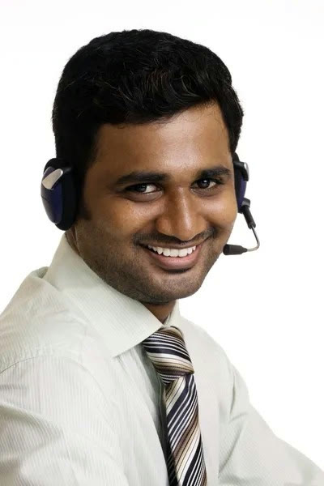

( DIRECTORS
TREATMENT )
CLOUD.RU
Привет!Спасибо заклассныйрежиссерскийчеллендж!
Снять ролик целикомв формате POV и при этомне просто завлечь зрителя,а побудить физическисопереживать герою — этозадача на тонкую работус ритмом, мизансценойи деталями.
Я хочу сделать так, чтобы каждый IT-руководитель и разработчик узналв этом сумасшедшем спринте себя,улыбнулся от точечных пасхалоки почувствовал физическое облегчение,когда в кадре появляется решениеот Cloud.ru.
Мы создадимстильный, ироничныйи невероятно живойролик, которыйзахочется разбиратьна кадры и шеритьв профильных чатах.
Я абсолютный адепт крафтового подхода.
Все, что можно построитьи снять вживую, – мы снимаемвживую. Настоящие реальныелокации, фактурная пластикаактеров и осязаемый реквизит,даже та самая сцена с прилип-шими к стеклу сотрудникамибудет снята крафтово.
VFX и AI-инструменты мы при-влекаем как высокотехноло-гичный усилитель там, гдефизический мир упираетсяв свои границы, – для созданияокружения, бесшовного рас-ширения пространств и стиль-ной интеграции интерфейсов.
В POV-съемке, чтобы передать состояниегероя, лицо которого мы практически невидим, всю эмоциональную нагрузкуна себя возьмут пластика камеры,реакция рук и монтажная драматургия.
Изначально камера будет реагировать на мирдергано, немного хаотично, напряженно.
Зритель будет на физиологическом уровнеощущать панику человека, на которогоодновременно валятся десятки критическихрешений. А в момент перехода, с появлениемCloud.ru, камера успокаивается, движениястановятся широкими, свободными иуверенными. Мы буквально даем зрителюсделать глубокий вдох вместе с героем.
POV
Я предлагаю сделать в роликенесколько слоев юмора.
На первом уровне, все будет работать за счетироничной комбинации очень жизненногоопыта и сюрреализма происходящего(синхронного движения топ-менеджментаи гиперболизирования ситуаций).
Погружаемся на слой глубже, и тутдобавляются внутренние приколы в виденочной пиццы, жарких дискуссий, а также
повторяющейся сцены с кофе, «дзинь» микроволновкии, конечно же, уставшего лица героя в зеркале с надписью«Улыбнись сегодняшнему дню».
И, наконец, для самых внимательных добавляются мемныедетали из мира IT в виде надписей на флипчарте, текстав консоли ноутбука и старого системника под столом.
Таким образом получается очень жизненная, насыщеннаяистория, где каждая деталь имеет значение.
Пространство офиса будет ощущаться достаточно большим, так какглавный герой работает в крупной компании с советом директоров.У нас будут две переговорки, кабинет героя, чиллаут-зона, кафете-рий и опенспейс. Визуально это минималистичный офис, условныйи не ассоциирующийся с каким-либо брендом, в нейтральных тонахи наличием природных фактур — дерево, металл, стекло, бетон иликамень. Точечными акцентами будут служить редкие предметы ме-бели и декор в глубоких сложных оттенках. Офис будет выглядетькак очень стильное, современное и гармоничное пространство.
F
A
C
T
O
R
Y
SETTING
( PRODUCTION FACTORY )
VFX-фон: цех конвейерной сборки. Например, автомобильной. Широкий проход между станками,уходящий вдаль, слева и справа – два конвейера, которые передают части и собирают автомобиль.
( НИКАКИХЗАЕЗЖЕННЫХ ЛИЦ )
В этой истории важнопередать все максималь-но реалистично и уси-лить это. Мы намеренноне будем искать идеаль-ных рекламных актеров,наш кастинг будет стро-иться на фактурных, инте-ресных и разнообразныхлицах, умении вырази-тельно передавать эмо-ции и качественно рабо-тать с мимикой. Предпоч-тения будем отдаватьпрофессиональным теат-ральным актерам, кото-рые не часто снималисьв рекламе.
Таким образом у насполучится собрать дей-ствительно крутой, коло-ритный сбалансирован-ный ансамбль, участникикоторого будут ощу-щаться настоящими сот-рудниками IT-компании,а не “рекламными акте-рами в образе айтишни-ков”. Было бы забавно дляшутки добавить к коман-де разработчиков одногопарня индийской внеш-ности – сделаем оммажклассическому мему IT-культуры.
Я строю световой рисунок на реализме и объеме.
Каждый кадр прорабатывается через естественные ис-точники света и глубокий светотеневой контраст.
Свет подчеркивает текстуры, пространство, отделяя ге-роя от фона и задавая изображению глубину и объем.
Плотный, богатый,благородный цвет.
Мы даем картинке мягкий ана-логовый, пленочный контрастс глубоким черным и сочными,но естественными скинтонами.Цветокоррекция не выглядитискусственной: мы мягко уси-ливаем существующую в кадрепалитру.
Монтаж будет очень динамичным, как американские горки, рваным, Монтаж будет очень динамичным, как американские горки, рваным,
и закручиваться по спирали,постепенно усиливаяэффект наваливающихсярешений на главного героя.Чтобы удерживать зрителя внапряжении и неперегрузить его, мызакладываем дведраматургические паузы внизших точках истории, гдезритель одновременно имаксимально сопереживаетгерою, и сможет выдохнуть.В момент высвобожденияпроисходит катарсическийрелиз: ритм вместе смузыкой резкоуспокаивается, кадрыстановятся длиннее иплавнее, передавая зрителюспокойствие и легкостьгероя.
ГОЛОС
Голос диктора будет звучать в двухнастроениях.
ПЕРВАЯ ЧАСТЬ
В первой части ролика он будет говоритьбыстро, напряженно, будто проговариваяогромный список задач, реплики дажемогут наслаиваться друг на друга, усили-вая давление на героя. Таким образом мывозведем ощущение информационногодавления в абсолют от бесконечного коли-чества идей и необходимых от героя ре-шений, которые сыпятся на негоодномоментно.
ВТОРАЯ ЧАСТЬ
Во второй части, в момент когда героюпредлагают выбрать Cloud.ru, речь дикто-ра сменяется: расслабляется, становитсяспокойной, размеренной и легкой. Этимприемом мы подхватим смену настроенияролика и покажем зрителю на ассоциатив-ном уровне, что с Cloud.ru все может бытьдействительно проще.
Victor Lyapakhin
Director’s treatment
for Cloud.ru
